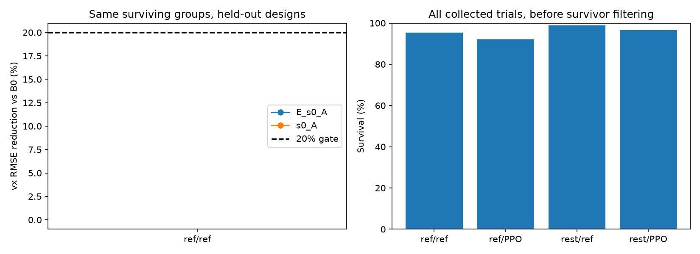

[사실] 실제 MJX GPU에서 16형상·19모션·모션당4구간·1초·kp30으로 수집했음 (8-45 kp200 재실행, PPO 생성 이득과 일치). 총 4,864회. reference_reference=레퍼런스 출발/레퍼런스 목표각, reference_ppo=레퍼런스 출발/PPO 목표각, rest_reference=home 1초 출발/레퍼런스 목표각, rest_ppo=home 1초 출발/PPO 목표각.
[사실] 각 행동 열은 모든 형상과 출발 조건에서 동일함. 출발 상태는 같은 형상·같은 구간에서 행동 출처 사이에 동일함. PPO 행동은 기존 kp30 전문가에서 가져와 같은 kp30에서 재생했음. 8-45 의 kp200 재생(생존 39.7 %)을 이득 일치 조건으로 재실행한 것임.
[사실] 네 조건·모든 형상에서 생존한 공통 5개 그룹, 4개 모션으로 주 비교했음. 최소24그룹·8모션 충족 여부: False. 조건별 생존 그룹을 별도로 사용한 결과는 보조 결과임.
안 본 형상 4-fold, seed3개. E=형상 좌표, s0=실제 출발 상태, A=실제 동일 목표각 열. B0=동일 행동 그룹 내 학습 형상 평균. 성공 기준은 B0 대비 vx 오차20% 이상 감소·형상 효과 부호80% 이상 일치·효과 표본32개 이상·공통 그룹 수 충족임.
| 출발/행동 | 생존/1216 | E+s0+A 오차(m/s) | B0 오차 | B0 대비 개선 | 효과 부호 | s0+A 개선 | 주 판정 |
|---|---|---|---|---|---|---|---|
| reference_reference | 1161 | 공통 표본 부족, 판정 불가 | |||||
| reference_ppo | 1120 | 공통 표본 부족, 판정 불가 | |||||
| rest_reference | 1202 | 공통 표본 부족, 판정 불가 | |||||
| rest_ppo | 1174 | 공통 표본 부족, 판정 불가 | |||||

[한계] 안착 출발은 실제 초기 속도·접촉도 함께 바꾸므로 관절 자세만의 효과가 아님. 공통 생존 그룹 평가는 낙상 이후 효과를 제외함. e000의 행동 구간만 사용했으므로 다른 행동 출처·새 모션에 대한 일반화는 미검증. 입력 s0만으로 형상을 추정할 수 있으므로 E 없는 모델도 함께 비교함. 회귀 성공은 TT 공동 생성·10초 task 성공의 증거가 아님.
전체 결과·seed·분할·요인별 차이 / 사전 조건 / 수집 점검 / 원단위 예측